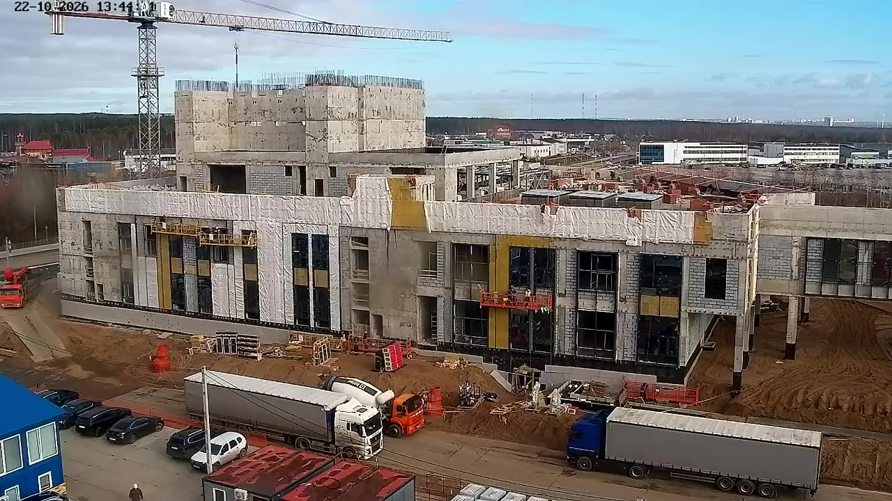
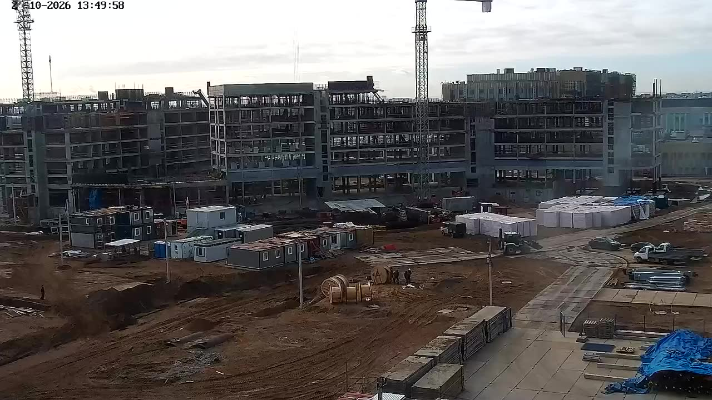
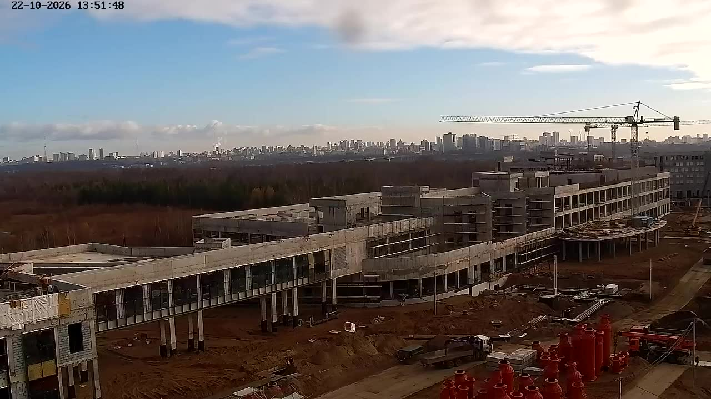
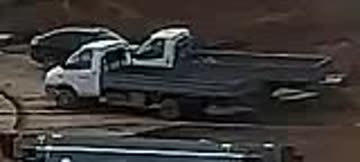

7на площадке
1въезд
68 %стоят
Фура 1
Бетоновоз 3
Фура 2
Камера 1 · въезд13:43:47

Погрузчик 4
Камера 6 · погрузка13:49:44

Бортовой 6
Камера 7 · выезд13:51:09
Запись 13:43–13:51
◆ вопросыКам 1
Кам 6
Кам 7
Простой и причина
есть только в прежнем виде «Машины»В виде ★ «Камеры» сигнала о долгом простое и клипа нет. Причина отмечается в раскрытой строке прежнего вида (?mode=log): «нет фронта · ждём бетон · поломка…».
Отчёты и деньги
отдельные разделы«Рапорт за смену», «Табель», «Ежедневный отчёт · XLSX», «Простой в ₽» есть, но из этого вида ссылки на них нет — меню разделов скрыто.
План · камера 1
схема, не GPSСобытия 4
весь журналЖдут ответа · 2
 Бортовой 8 — это Самосвал 7?ушёл 13:51:43 · появился 13:51:44
Бортовой 8 — это Самосвал 7?ушёл 13:51:43 · появился 13:51:44
Бортовой 8 — это Самосвал 6?ушёл 13:51:29Сейчас на площадке · 7
 Фура 1в кадре 13:43:40–13:44:35 · Камера 1
Фура 1в кадре 13:43:40–13:44:35 · Камера 1 Погрузчик 4не видно с 13:50:02 · Камера 6
Погрузчик 4не видно с 13:50:02 · Камера 6